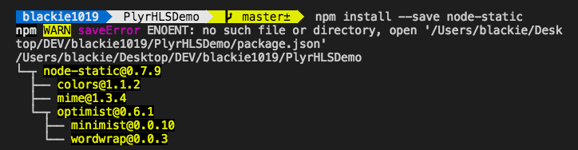
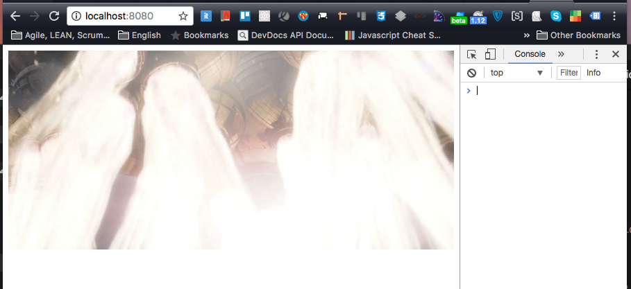

介紹如何使用NodeJS的套件幫我們快速建立靜態網頁的Hosting服務，解決 Cross-Origin Resource Sharing (CORS) 問題
在本機開發靜態網頁時，常常會遇到本機 Cross-Origin Resource Sharing (CORS) 的問題，而這也讓我們時常需要額外起一個Web Hosting服務如Apach, IIS 或是NodeJS來幫我們將服務請求才可以達到簡單的跨網域的請求開發．而今天要分享如何在3分鐘內透過 NodeJS + node-static 這個套件將一個靜態網站服務建立．
What is Cross-Origin Resource Sharing (CORS)
跨網站(HTTP)請求是指發出請求所在網域不同於請求所指向之網域的 HTTP 請求，例如網域 A（http://domain-a.com）的網頁載入一個 中的 src 屬性內的資料， 它向網域 B（http://domain-b.com）請求圖片資源（http://domainb.b/image.jpg）。這是我們在網頁當中時長常常使用的一項技術，可載入其他網站資源，像是 CSS 樣式表、影像、程式碼等等資源。

但基於安全性考量，程式碼所發出的跨站 HTTP 請求受到相當限制，好比說用 XMLHttpRequest 及 Fetch 發出的請求受限於同源政策（same-origin policy），所以 XMLHttpRequest 或 Fetch 只能發送 HTTP 請求到和其所來自的相同的網域．而國際上也有 OWASP在2007年開始關注這樣的一個安全行為，特別將幾個行為視為要加強預防的重點，對此感興趣的可以到 OWASP 官網看一下相關議題．
而 Chrome 預設也會拒絕此行為，這讓我們本機開發變成很麻煩．但我們可以將此權限打開．對於Chrome該如何開此權限跟為什麼要阻擋此行為可以參考之前的No Access-Control-Allow-Origin header is present on the requested resource．
接下來我們就要介紹如何快速的建立一個靜態的網頁服務，幫我們解決本機開發的問題．
Node Package - node-static
node-static是一個NodeJS的模組，只需將放置靜態資料的目錄與服務監聽的Port設定好，即可快速的建立靜態網頁的服務．
只需用NPM進行安裝：
npm install --save node-static
本身的相依也不多:

接著讓我們嘗試用它來解決一個實例．
Facing Problem : Get Remote Video Resource from Local index.html
這邊我們介紹之前的一篇文章hls.js for Chrome Desktop為範例：
index.html:
1 |
|
這邊我們可以看到本機網頁一打開就可以看到 CORS的相關錯誤：
{kind=link}
而我們這邊透過安裝完node-static後，新增一個index.js的檔案並加入以下內容：
index.js:
1 | var static = require('node-static'); |
當我們新增完後別忘記要幫 package.json 設定指令去啟動服務:
1 | { |
當建立完成後即可透過透過下方指令啟動靜態網頁服務
node start
執行畫面如下:
